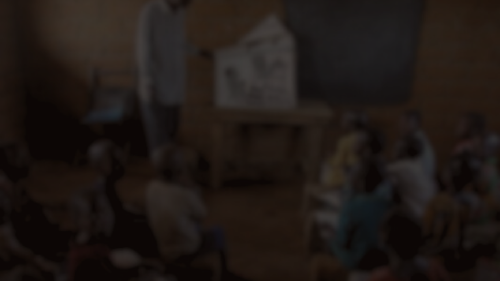
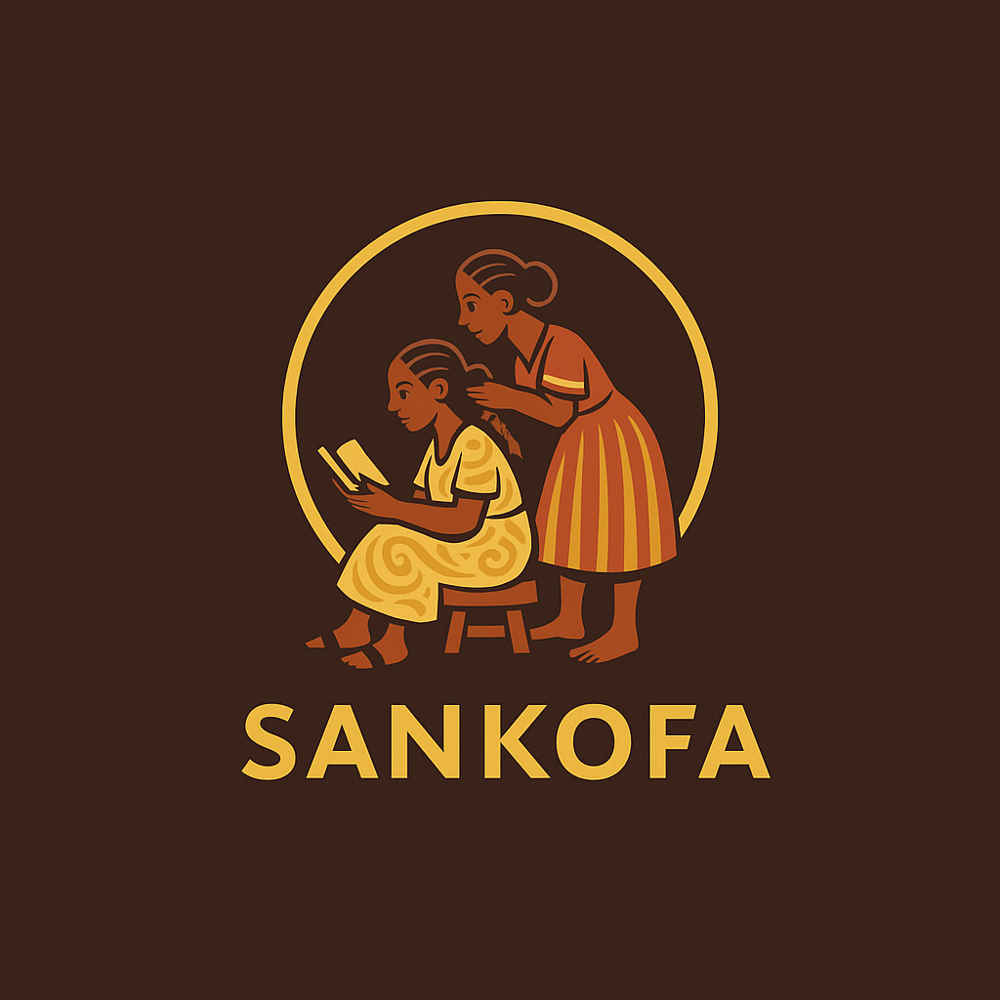
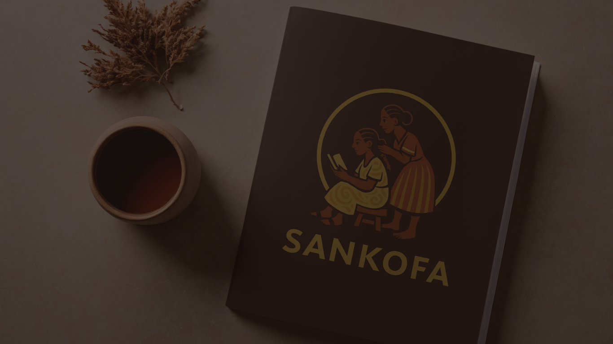

Conciencia de Clase · Antirracismo · Resistencia

Símbolo Sankofa — pueblo Akan, Ghana
Sankofa es un concepto filosófico del pueblo Akan de Ghana. Proviene del idioma Twi y expresa una idea radicalmente política: volver al origen para recuperar lo que fue arrebatado y aprender de ello para avanzar.
Desde Sankofa asumimos esta idea en clave marxista: el despojo epistémico fue una herramienta central del capitalismo colonial. Por eso, Sankofa no es un emblema identitario ni una referencia estética. Es un método político de análisis y acción.

Pensamiento crítico que sale del aula a la calle
En construcción →